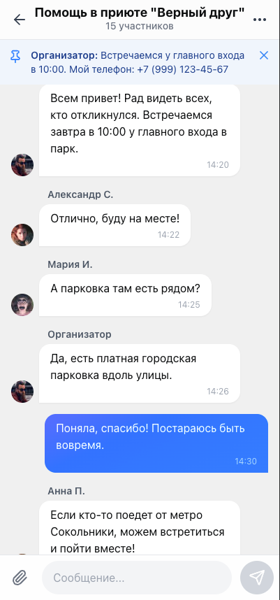
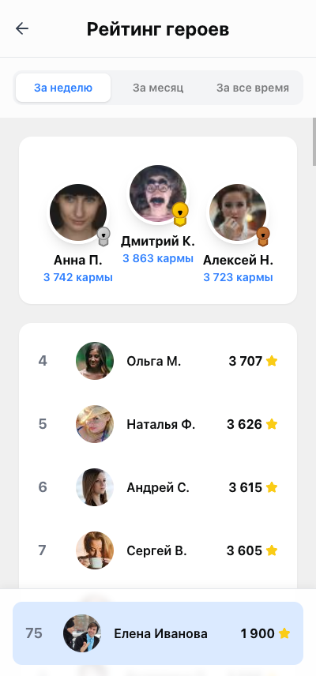
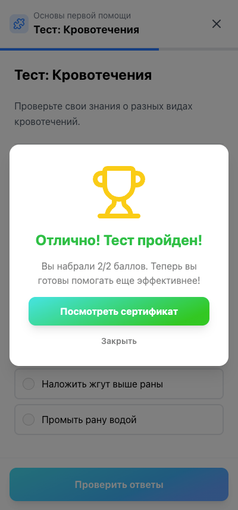

MAX Добро
Цифровая платформа молодёжного волонтёрства в мессенджерах MAX и Telegram.
 Открыть
Открытьсервис
Государство поддерживает волонтёрство.
Цифрового канала для молодёжи не хватает
- Волонтёрство — приоритет национальных проектов: выделены бюджеты, гранты и региональные программы.
- Молодёжь проводит время в мессенджерах. MAX — национальная платформа с собственным охватом.
- Вузам нужны подтверждённые «часы добра» и портфолио абитуриента — растёт спрос на цифровой учёт.
Открытьсервис
Четыре барьера, из-за которых молодёжь не доходит до волонтёрства
Открытьсервис
Один сервис закрывает все четыре барьера
Волонтёрский контур внутри мессенджера: без отдельного приложения, паролей и анкет.
 Открыть
Открытьсервис
Поиск дел, запись и учёт часов — в одном контуре
Карта актуальных событий, запись из мессенджера, подтверждённые часы в цифровом портфолио.

Открытьсервис
Признание и прогресс уже работают
в текущей версии продукта
Ответ на 61% отказов: участие становится видимым, сравнимым и подтверждаемым.


Открытьсервис
Курсы, сертификаты и книжка волонтёра — внутри сервиса


Открытьсервис
Кабинет фонда и НКО уже работает
Не макет. Организации получают готовый контур управления событиями, участниками и отчётностью.

 Открыть
Открытьсервис
Мы не заменяем Добро.рф — закрываем молодёжный канал
Открытьсервис
Аудитория уже внутри канала — привлечение почти ничего не стоит
Бот, мини-приложение, авторизация и уведомления живут в мессенджере. Отдельное приложение устанавливать не нужно.
Открытьсервис
Зачем это государству и за счёт чего масштабируется
- Канал 16–35 в национальной цифровой среде, а не ещё один отдельный сайт.
- Подтверждённый учёт часов для вузов, регионов и фондов.
- Прозрачная отчётность по охвату и вовлечённости вместо ручных таблиц.
- Отечественный контур: MAX, VK Cloud, PostgreSQL, GigaChat Lite.
- Распространение в мессенджере: бот и прямые ссылки. Стоимость привлечения близка к нулю.
- Вузы: «часы добра» и баллы к поступлению как институциональный спрос.
- Регионы: контракты на подключение и сопровождение в логике нацпроекта.
- НКО и фонды: расширенный кабинет и аналитика. Грант — стартовое плечо, не единственный источник.
Открытьсервис
Доработка готового MVP — 2,96 млн ₽ за осень
Три специалиста доводят существующий продукт. Инфраструктура: VK Cloud, собственный PostgreSQL, без зарубежного облачного бэкенда.
Открытьсервис
Рабочий продукт есть сейчас. Запуск — зима 2026–2027
Просим поддержать доработку уже работающего сервиса
Три разработчика. Срок — осень. Бюджет доработки — 2,96 млн ₽. Продукт можно открыть сейчас.